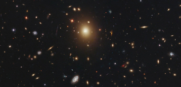

-

IC 1101
A IC 1101 é a maior galáxia do universo. A galáxia é elíptica à lenticular e aparece como coloração amarelo dourado. A galáxia mais brilhante está situada a mais de 1.04 bilhões de anos-luz da Terra.
-
Phoenix Cluster
Phoenix Cluster é um dos grupos de galáxia mais sólidos no universo. Ela tem localização em torno de 5.7 bilhões de anos-luz da Terra. A galáxia elíptica é composta de matéria intra-grupo média e escura.
-

NGC 262
A NGC 262 é localizada a 202 milhões de anos-luz da Terra, que é uma das maiores galáxias espirais conhecidas. O diâmetro da galáxia é de aproximadamente 1.3 milhões de anos-luz.
-

NGC 4889
A NGC 4889 é também famosa como “Coma B”, uma galáxia super gigante elíptica situada aproximadamente a 308 milhões de anos-luz da Terra. Ela também foi descoberta pelo astrônomo britânico Frederick William Herschel I em 1785.
-

NGC 4874
A NGC 4874 também conhecida como “Coma A” foi descoberta em 1785 pelo astrônomo britânico Frederick William Herschel I. E está a 350 milhões de anos-luz longe da Terra. É uma galáxia lisa, em forma de bola, cercada por um círculo estelar.
-

A2261-BCG
A A2261-BCG situou-se a aproximadamente 3 bilhões de anos-luz da Terra. É elíptica em formato e foi encontrada pelo Telescópio Espacial Hubble. A A2261-BCG tem um diâmetro e um milhão de anos-luz.